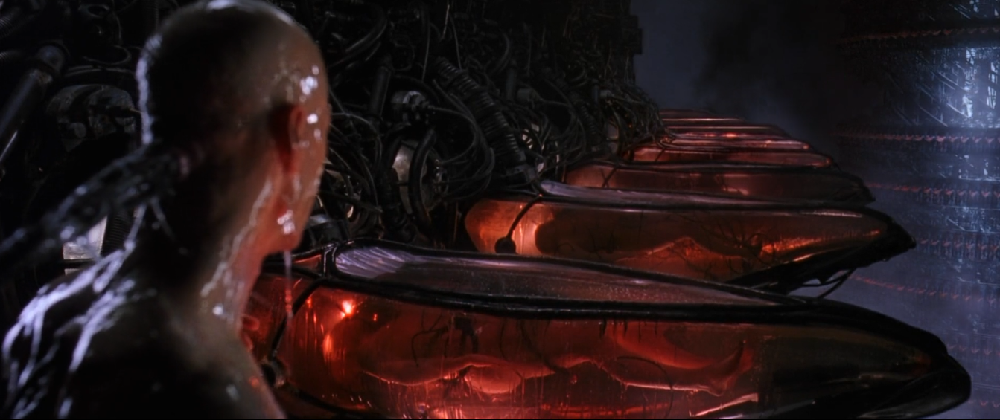
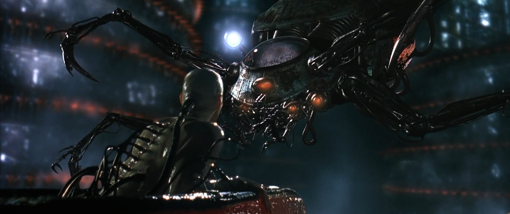
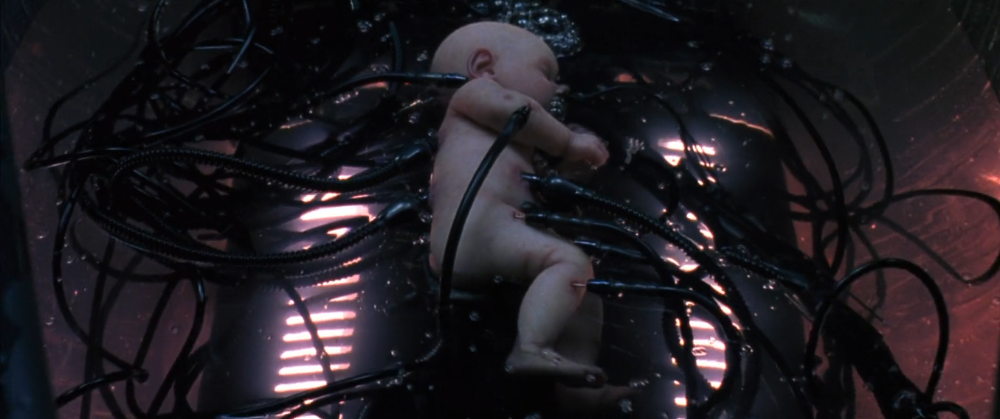
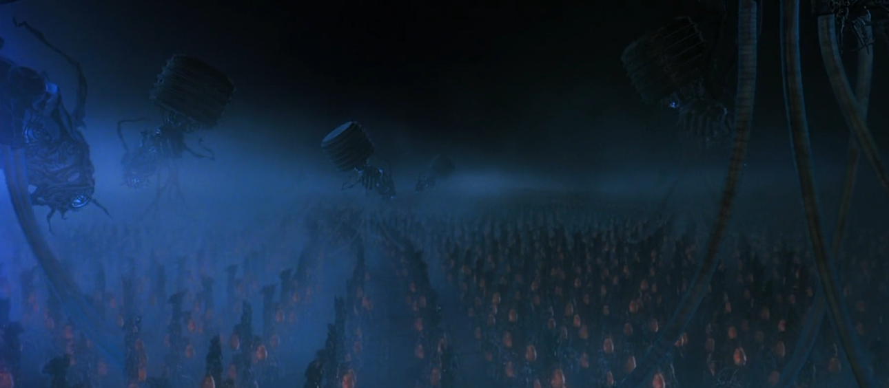

Sabemos que no inicio do século XXI, a humanidade estava celebrando a nossa própria criação.
a inteligência artificial.
uma conciência singular que gerou uma raça de maquinas.
Ao longo da história, nós dependiamos de máquinas para sobreviver... hoje , elas que dependem da gente para sobreviverem.
- por quê ?
bem, o corpo humano gera mais bioeletricidade do que uma bateria de 120 volts... combinada com uma forma de fuzão, as maquinas encontraram toda energia de que precisavam.



Nós humanos não nascemos mais... somos cultivados em campos

Voltar